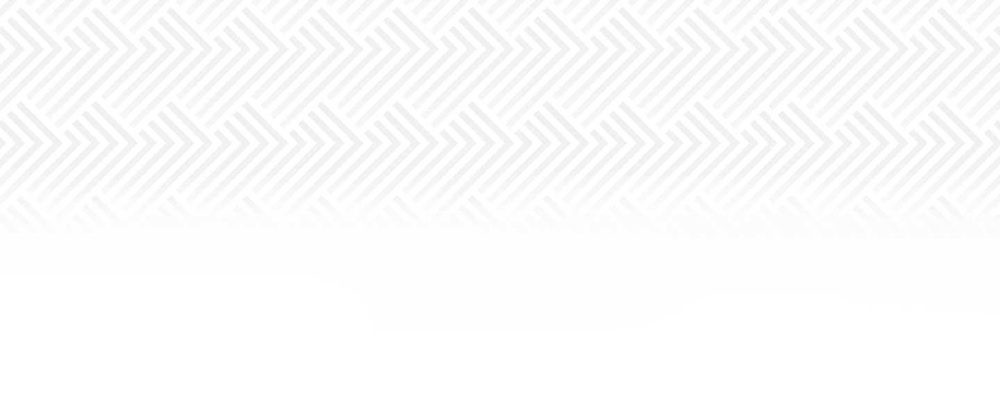

A primeira geração de Talentos é composta por três integrantes, conhecidos como os Viajantes. Cada um deles possui uma história única que os envolve em aventuras através do tempo.

Toshiruz é o primeiro Viajante da 1ª Gen, ao lado de Dante e Eeiris. As suas lives acontecem às 18h, no final do período da tarde e início da noite, e tendem a terminar às 21h, todos os dias exceto nas Terças e Sextas. É comum que ele converse com as pessoas e/ou explique o que irá acontecer em live. Seu conteúdo é variado, porém gira envolta dos jogos que ele irá transmitir, a sua escolha parece ser aleatória.
 747k
747k
 575k
575k
 157k
157k

Danaramor, mais conhecido como DanteWill, ou apenas Dante, as vezes também chamada de Danara, é o segundo fundador da NEOBAKA, sendo o segundo Viajante da 1ª Gen, ao lado de Toshi e Eeiris. Ele/Ela abre live às 20h e geralmente terminam às 23h, todos os dias exceto nas Quartas e Sábados.
520k
73k
115.3k

EeirisZuro, mais conhecida apenas como Eeiris ou Eres, é a terceira fundadora da NEOBAKA, terceira e última Viajante da 1ª Gen, ao lado de Toshi e Dante. As suas lives acontecem às 13h e geralmente terminam às 16h, todos os dias exceto nas Quartas e Sábados assim como Dante.
270k
46.4k

Ravi, é o primeiro Destinado, Talento da 2ª Gen, ao lado de Eveline, Mono & Momo, e é o quarto (sexto incluindo os que não fazem mais parte da agência) a entrar pra NEOBAKA. As suas lives acontecem às 21h e geralmente terminam às 00h, todos os dias exceto nas Terças e Sextas assim como Toshi. O seu conteúdo é bem variado entre jogos de horror e aventura, mas é esperado que ele varie ainda mais nas escolhas e gêneros de jogos que irão aparecer em suas lives.
242k
29.8k

Eve, é a segunda Destinada, segundo Talento da 2ª Gen, ao lado de Raviel, Mono & Momo, e é a quinta a entrar pra NEOBAKA. As suas lives acontecem às 16h e geralmente terminam às 19h, todos os dias exceto nas Segundas e Quintas.
118k
19k


Mono & Momo Chan, mais conhecidas apenas como Mono & Momo ou M.M, são as terceiras e últimos Talentos Destinados da 2ª Gen, ao lado de Raviel e Eveline, e são as oitavas a entrarem pra NEOBAKA. As suas lives acontecem às 12h e geralmente terminam às 15h, todos os dias exceto nos Domingos e Quintas.
66.8k
9.3k

Emi já produz conteúdo desde 2015, em seu primeiro canal que continua ativo, porém já não posta nada desde de novembro de 2023. Ela já era conhecida pela comunidade; e recentemente se juntou e se tornou uma V-Tuber associada à NEOBAKA, onde sua estreia foi em 2024. Ela/Ele abre live às 20:30h e geralmente terminam às 23:30h, todos os dias exceto nos Domingos e Segundas.
397k
68.4k
140.4k

...
...

A NEOBAKA é a maior org de VTuber (virtual creators) do país. Produzimos conteúdo em várias plataformas, sendo todos eles baseados nas STREAMs. Nossos membros fazem LIVE diariamente, sempre batendo papo com a galera, reagindo a videos de humor, e jogando jogos variados.
A NEOBAKA é a maior org de VTuber (virtual creators) do país. Produzimos conteúdo em várias plataformas, sendo todos eles baseados nas STREAMs. Nossos membros fazem LIVE diariamente, sempre batendo papo com a galera, reagindo a videos de humor, e jogando jogos variados.


Começamos a produzir conteúdo recentemente (menos de 2 anos) e já atingimos números incríveis para essa faixa de tempo. Sem falar na diversidade do público interessado neste tipo de conteúdo. Aqui você verá alguns números atingidos por nossos membros. O conteúdo é sempre voltado para um público jovem, na maioria das vezes são jogos e bate-papo. Porém, sempre mantendo uma vibe tranquila, sem palavreado pesado, e passando uma mensagem positiva. Realizamos LIVES beneficentes recorrentes no Natal e datas comemorativas.